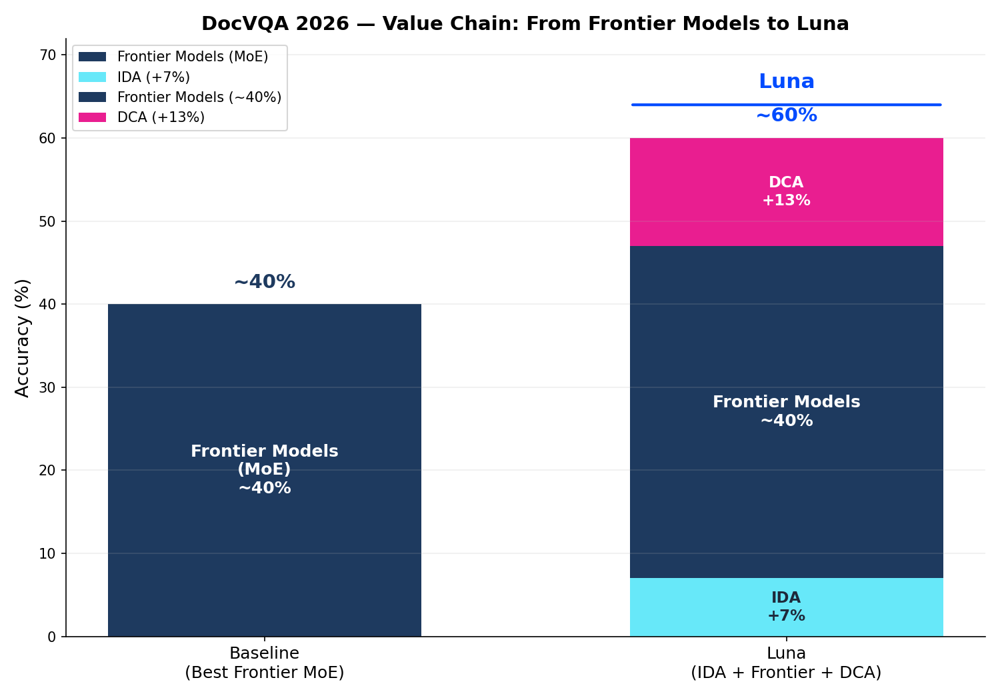

Slide Deck · Version 1.1 · April 2026

Nachhaltig: Bessere FMs heben Baseline — IDA/DCA addieren on top.
Modellfortschritt = unser Fortschritt
| = AI Knowledge Worker | ||
| AI University | Lernen + Anpassen + Individualisieren | Vision — Alleinstellung von morgen |
| DCA | Denken + Entscheiden + Konvergieren | Edge — unser Vorsprung |
| Foundation Models | Fähigkeiten + Wissen + Weltmodell | Commodity — extern, austauschbar |
| IDA | Lesen + Klassifizieren + Extrahieren | Commodity — Grundlage |
Vier Schichten, ein Produkt: der AI Knowledge Worker.
| Chatbot | Knowledge Worker | |
|---|---|---|
| Modus | Fragen beantworten | Aufgaben lösen |
| Input | Eine Frage | Ein Auftrag |
| Output | Eine Antwort | Ein Ergebnis |
| Beispiel | "Was steht in §3?" | "Prüfe den Vertrag auf Risiken und erstelle eine Redline" |
| Wertschöpfung | Information | Entscheidung + Aktion |
| Ersetzt | Google / FAQ | Sachbearbeiter / Analyst |
| Pricing | Seat / Abo | per Case / per Ergebnis |
Chatbot = Suchmaschine mit natürlicher Sprache. Nützlich, aber kein Geschäftsmodell.
Knowledge Worker = denkt, entscheidet, liefert ab. Messbar, skalierbar, monetarisierbar.
Wer nur einen Chatbot baut, konkurriert mit ChatGPT. Wer einen Knowledge Worker baut, ersetzt Prozesskosten.
| A: Technologie verkaufen | B: Wertschöpfung verkaufen | |
|---|---|---|
| Produkt | Software-Zugang | Arbeitsergebnis |
| Pricing | Seat / Lizenz | per Case / per Entscheidung |
| Vertrieb | Push — Enterprise-Team, Workshops | Pull — Output überzeugt, Kunde kommt |
| Akquisekosten | Hoch | Niedrig |
| Skalierung | Linear (mehr Sales) | Exponentiell (mehr Qualität) |
| Kunde kauft | Potenzial | Ergebnis |
| Mechanismus | Unser Beispiel | Wer macht das heute |
|---|---|---|
| Per Case | Vertragsprüfung, Claims, Due Diligence | Kira (Legal AI) — pro Vertrag |
| Per Tender | Ausschreibungsanalyse, Anforderungsmatching | Spend Matters — pro Ausschreibung |
| Per Einsparung | Rechnungsfehler, Förderpotenzial | Stripe Radar — % vom verhinderten Betrug |
| Per Entscheidung | Risikobewertung, Lieferantenauswahl | Palantir AIP — pro Entscheidungs-Workflow |
| Usage-based API | Pro Request für Entwickler | Claude API / Claude Code — pro Token |
Revenue skaliert mit Output, nicht mit Nutzerzahl — ideal für IONOS oder StackIT
| Kanal | Mechanismus | Vorbild |
|---|---|---|
| Self-serve SaaS | Upload → Ergebnis → Freemium → Conversion | ChatGPT, DeepL |
| Public Benchmarks | Qualitätsbeweis erzeugt Inbound | DocVQA, SWE-bench, MMLU |
| API / Developer Pull | SDKs, Playground → Einbau in Drittsysteme | Google Maps API, Stripe |
| Bottom-up | Einzelnutzer → Team → Organisation | Dropbox, Slack |
| OEM / White-Label | Einbettung in DMS, ERP, Legal-Tech | Intel Inside, Dolby |
| Cloud / Hyperscaler | Marketplace-Distribution, EU-souverän | IONOS, StackIT, Azure |
Kein Workshop. Kein POC. Upload, Ergebnis, Entscheidung.
| Vertical | Kernprodukt | Warum |
|---|---|---|
| Insurance | Claims, Fraud, Policenprüfung | Klare Prozesse, messbare Einsparung |
| Legal / M&A | Contract Intelligence, Due Diligence | Höchste Zahlungsbereitschaft |
| Healthcare | Befunde, Arztbriefe, Medikation | Hohe Regulierung, Digitalisierungsdruck |
| Public Sector | Anträge, Compliance | Regulatorischer Druck, Volumen |
| Regulatory | Policy Enforcement, Audit Trails | Wachsender Markt, hohe Marge |
| Markt | Wir |
|---|---|
| Dokumente lesen | Dokumente verstehen und Entscheidungen ableiten |
| Chat über Dokumente | Knowledge Worker — denkt, lernt, handelt |
| US Cloud | EU Cloud — IONOS, StackIT, DSGVO by Design |
| Individuelle Lösung | Skalierbares Produkt — eine Plattform, beliebige Verticals |
| Existiert | Fehlt |
|---|---|
| GPUs, Cloud, Rechenzentren | Intelligenz, die darauf läuft |
| Foundation Models | Produkte, die Ergebnisse liefern |
| EU-Infrastruktur | EU-souveräne AI-Produkte |
Partner (IONOS, StackIT) sind Beschleuniger — nicht Voraussetzung.
| Vertical | Prozess | Was der Knowledge Worker tut |
|---|---|---|
| Insurance | Claims Processing | Schaden bewerten, Fraud erkennen, Auszahlung entscheiden |
| Banking | KYC / AML | Identität prüfen, Risiko bewerten, Freigabe erteilen |
| Public Sector | Antragssysteme | Antrag prüfen, Vollständigkeit sichern, Bescheid vorbereiten |
| Legal | Vertragsanalyse | Risiken identifizieren, Klauseln bewerten, Redline erstellen |
Schnellster Weg zu Umsatz: Ergebnis statt Tool, messbarer ROI, Pricing pro Case.
| Was rein geht | Was entsteht |
|---|---|
| Verträge, Rechnungen, Korrespondenz | Beziehungsgraphen, Verpflichtungen, Fristen |
| Historische Dokumente | Kontext und Entwicklung über Zeit |
| Neue Dokumente | Automatische Einordnung und Verknüpfung |
Wert: Grundlage für alle Agenten. Baut sich über Zeit auf. Nicht kopierbar.
| Produkt | Job-to-be-done | Vertical |
|---|---|---|
| Contract Risk Analyzer | Vertrag hochladen → Risiken, Fristen, Pflichten | Legal |
| Tender Intelligence | Ausschreibung analysieren → Anforderungen, Lücken, Strategie | Public / Procurement |
| Compliance Checker | Dokumente gegen Regulatorik prüfen → Verstöße, Handlungsbedarf | Regulatory |
| Invoice Auditor | Rechnungen prüfen → Fehler, Überzahlungen, Duplikate | Finance |
| Policy Checker | Policen analysieren → Deckungslücken, Optimierungspotenzial | Insurance |
| Claims Summarizer | Schadenfall zusammenfassen → Entscheidungsvorlage | Insurance |
Jedes Produkt: Landing Page, Self-serve, Freemium, Stripe Checkout.
| Klassisch | Unser Ansatz | |
|---|---|---|
| AI-Anteil | 60–70% | 95% |
| Mensch | Korrigiert Fehler | Trainiert das System |
| Effekt | Gleichbleibend | System wird besser |
| Skalierung | Linear (mehr Menschen) | Exponentiell (weniger Menschen) |
Jede menschliche Korrektur fließt zurück → AI University → besseres Modell.
| Maßnahme | Wirkung |
|---|---|
| Public Leaderboard | Sichtbarer Beweis: wir sind besser |
| Live Demo | Eigene Dokumente testen — sofort |
| Offene Testsets | Transparenz schafft Vertrauen |
| "Compare against..." | GPT, Claude, Gemini, Legacy OCR — wir gewinnen |
Wer wirklich besser ist, kann sich öffentlich messen. Die meisten verstecken sich.
| Zielgruppe | Warum sie selbst zahlen |
|---|---|
| Anwälte | Vertragsprüfung in Minuten statt Stunden |
| Steuerberater | Dokumente sofort strukturiert |
| M&A-Berater | Due Diligence beschleunigt |
| Gutachter | Befunde und Quellen automatisch verknüpft |
| Consultants | Reports aus Dokumentenbergen in Minuten |
Bottom-up: Einzelperson → Team → Organisation. Leichter als Top-down Enterprise.
Analogie: Ein eBay-Händler kauft günstig, verkauft teuer → Gewinn.
Der Business Agent durchsucht Dokumentenbestände, findet monetarisierbaren Wert, setzt die Verwertung um → Gewinn. Autonom, end-to-end.
| Geschäftsmodell | Was der Agent autonom tut | Erlösquelle |
|---|---|---|
| Forderungsmanagement | Rechnungsarchive durchsuchen, Überzahlungen und offene Forderungen identifizieren, Rückforderung einleiten | Anteil an zurückgeholftem Geld |
| Fördermittel-Akquise | Dokumentenbestände gegen Förderkataloge matchen, Anträge vorbereiten und einreichen | Anteil an bewilligten Fördermitteln |
| Compliance-Audit-as-a-Service | Vertragsbestände kontinuierlich gegen Regulatorik prüfen, Verstöße melden, Maßnahmen dokumentieren | Abo oder pro Verstoß |
| Vertragsoptimierung | Laufende Verträge analysieren, Kündigungsfristen, Nachverhandlungspotenziale und bessere Konditionen identifizieren | Anteil an realisierter Einsparung |
Der Agent ist kein Tool. Er ist ein autonomer Geschäftsprozess, der sich selbst trägt.
| Phase | Zeitraum | Was sich ändert | Ziel |
|---|---|---|---|
| 1 | 0–12 Mo | Erste Wedge-Produkte (Insurance, Legal), Self-serve | Umsatz + Referenzen |
| 2 | 9–15 Mo | API öffnen, Cloud-Partner anbinden, Personal KW | Skalierung + Alleinstellung |
| 3 | 15+ Mo | Plattform, OEM, Business Agent, Autonomous Backoffice | De-facto-Standard |
| Dimension | Alt | Neu |
|---|---|---|
| Edge | OCR / Extraktion | Document Reasoning (IDA + DCA + AI University) |
| Produkt | Software / Plattform | Entscheidungen + Aktionen |
| Pricing | Lizenz / Seat | per Value / per Case |
| Sales | Enterprise-Vertrieb | Self-serve, Output sells |
| Alleinstellung | Features | Memory + Flywheel + Domänenlernen |
| Fokus | Horizontal | Vertikal |
Dokumentenanalyse = Einstieg.
Knowledge Worker = Produkt.
Prozesse = Monetarisierung.
Memory = Alleinstellung.
Verticals = Go-to-Market.